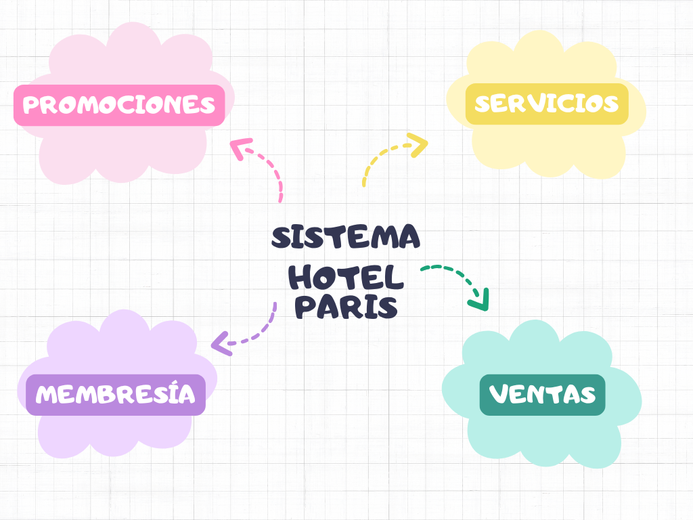

El Sistema de Gestión de Reservación es un sistema para poder facilitar el registro de las reservaciones de habitaciones del Hotel París, de igual manera el registro de horario de los empleados.
El Hotel París cuenta con una gran ineficiencia al registar sus reservacions, utilizando un registro hecho a mano, lo cual conlleva a equivocaciones en dicha reservaciones. De igual manera es ineficiente el registro del horario de Entrada/Salida de los empleados.
Implementar un software de gestión hotelera a través de la creación de módulos para el registro de reservaciones, el control de horarios de personal y la administración de habitaciones, entre otros, para agilizar y centralizar los procesos operativos clave del hotel.
El sistema se fragmento empleando la estrategia de "divide y vencerás", que tiene como objetivo identificar unidades de desarrollo lo suficientemente claras para ser creadas de manera independiente, pero que a su vez se integren con facilidad en el sistema completo.
